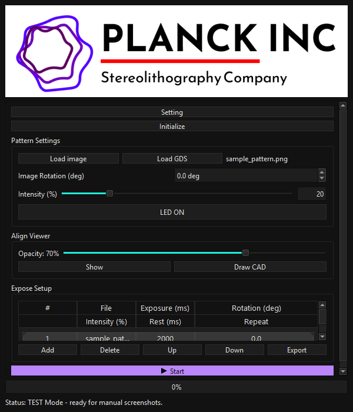
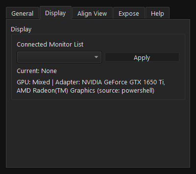
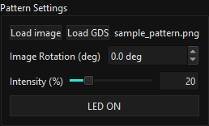
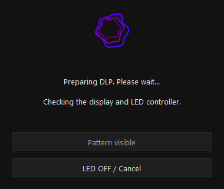
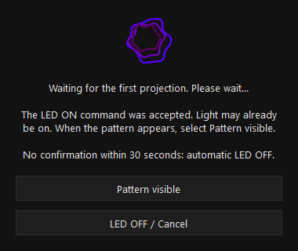
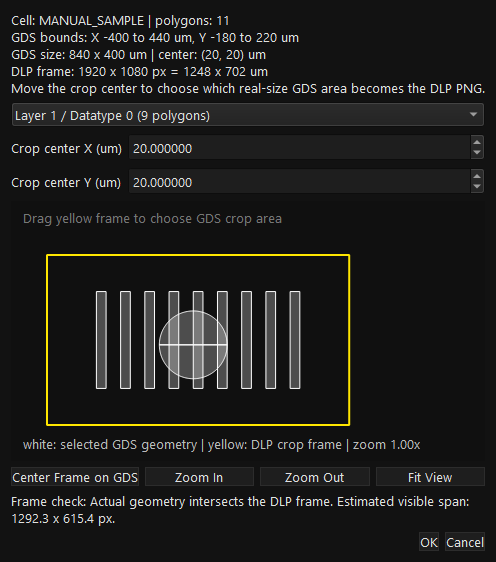
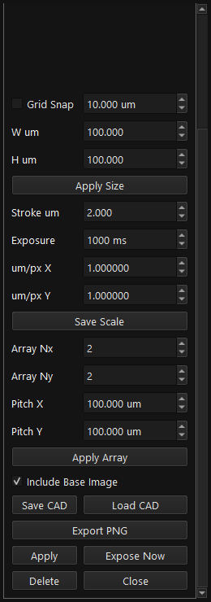
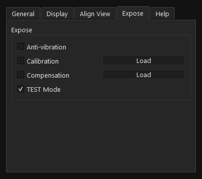
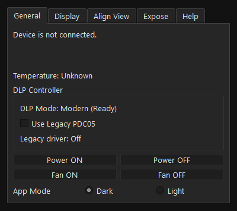
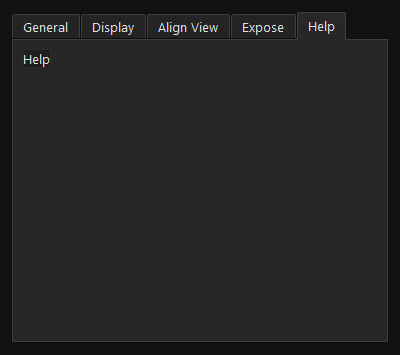

MASKLESS LITHO v2.1.5
Operator manual for the Windows standard edition of PLANCK INC's maskless lithography application.
Executable: maskless_v2_1_5.exe / maskless_v2_1_5_fast.exe
v2.1.5 strengthens Display Apply validation and adds first-projection confirmation for manual LED output. Motorized Focus is not included in the current standard edition.

Quick Start
Connect and initialize the device, select the display, load a pattern, align it, and run exposure.
- Check the device's USB control and DLP video connections, then run
maskless_v2_1_5.exe. - For real exposure, turn off
Setting > Expose > TEST Modeand pressInitialize. Resolve any initialization failure before continuing. - Set the DLP to
1920x1080and100%Windows scaling. Select the physical DLP underSetting > Display, pressApply, and check the black output window. - Load a pattern with
Load image. For GDS, first save the CAD scale for the current lens, then useLoad GDS. - Use
Align Viewer > Showto align the overlay with the external microscope/camera image. UseAlign Wizardwhen needed. - If using UV Keystone, verify
APPLIED (ON)for a profile matching the current lens and DLP. Check the intensity unit and lens selection. - Press
Expose Setup > Addand check each row's Exposure, Rotation, Intensity, Rest, and Repeat. ManualLED ONis a separate operation, not a required step before Sequence. - Press
Start. To interrupt, pressStopand check black output and the device state. For manual illumination, follow Manual LED ON.
- Distinguish the operator display from the DLP and keep video connections and Windows scaling stable during output.
- UV may already be on while the first-projection dialog is open. Do not treat confirmation time as unexposed time.
- TEST Mode does not validate real exposure or complete real-device first-projection confirmation.
Safety
Check output state and errors before proceeding.
- Follow the equipment's shielding and operating procedures. Check exposure duration, intensity, lens, and sample position first.
- Black output is an image state. It does not replace LED OFF and zero-current confirmation. Do not begin another exposure while a safety error remains.
Display > Applyis blocked during exposure, manual LED preparation/output, and first-projection confirmation.- Anti-vibration turns the fan off and attempts LED ON about 500 ms later. Manual output has a 60-second overheat limit. Check fan recovery after stopping.
- LED OFF, current reset, or fan recovery failures may trigger retries and block subsequent exposure. Resolve the warning even if the display is black.
- On exit, active output and timers are stopped first. Exit may be blocked if output OFF cannot be confirmed. Canceling the CAD save prompt or failing to save keeps the editor open.
Install/Run
Choose a single executable or Fast Portable from the official release.
- Download
maskless_v2_1_5.exefrom the v2.1.5 release. Alternatively, extractmaskless_v2_1_5.zip. - For faster repeated launches, extract
maskless_v2_1_5_fast.zipand runmaskless_v2_1_5_fast.exeinside it. Keep the adjacent_internalfolder. - Release packages do not require a separate Python or gdstk installation. Install device drivers as required by the manufacturer and use the existing external microscope-camera application.
- Back up user settings, LUT, CAD scales, and Keystone profiles before upgrading.
SHA256SUMS.txtprovides release file integrity hashes.
cd C:\GitProjects\MASKLESSLITHO
python -m venv venv64
.\venv64\Scripts\python.exe -m pip install -r requirements.txt
.\venv64\Scripts\python.exe main.py.\venv64\Scripts\python.exe build_exe.py
.\venv64\Scripts\python.exe build_exe_fast.pyrequirements.txt targets the standard edition. Focus source and libraries are not prerequisites for the standard app.Main Window
The main window connects device initialization, pattern input, alignment, and exposure.
| Area | Purpose / Checks |
|---|---|
| Setting | Controller, display, Align View, exposure correction, TEST Mode |
| Initialize | Initialize device power; resolve failures before exposure |
| Pattern Settings | Image/GDS loading, rotation, intensity, manual LED |
| Align Viewer | Show, Opacity, Draw CAD |
| Expose Setup | Sequence rows and parameters, Start / Next / Stop |
DLP Display / Apply
Display selection and black-output validation in v2.1.5.
- Initialize the device, stop all output, and check
1920x1080resolution and100%Windows scaling for the DLP. - Select the physical DLP in
Setting > Display > Connected Monitor List. Selecting the combo box alone does not change output. - Press
Apply. The app keeps the existing black cover while checking LED OFF, current zero, and current readback. - A valid output window is reused for the same display. For another display, the new black output window's screen, resolution, scaling, and coverage are validated before saving selection.
- Check black output and the current-monitor label before continuing. Apply itself does not project a pattern, switch the LED on, or start exposure.

Stop exposure, LED preparation and manual LED output before changing the display.: finish output with Stop or LED OFF / Cancel first.LED OFF/current 0 could not be confirmed.: selection is not saved. Check USB, the controller, and status; resolve the OFF failure.- Disconnection, resolution/scaling changes, or a hidden, minimized, or deleted output window can block LED output or request safety cleanup.
- After restoring connections and Windows settings, revalidate with Display Apply. A missing or ambiguous saved display does not cause output to an arbitrary monitor.
Pattern Settings
Set the pattern, rotation, intensity, and manual illumination.
Load image: load a supported image such as PNG/BMP/JPG. Check the filename and DLP resolution.Load GDS: select a layer/datatype and crop frame from GDS/GDS2 and convert it to a monochrome DLP PNG.Image Rotation (deg): pattern rotation. After adding a sequence row, also check that row's Rotation.Intensity: check percent units when LUT is off, or the selected lens's calibrated irradiance units when enabled.LED ON: manually output the current pattern after readiness checks. The button showsPreparing LED... (Cancel)during preparation andLED OFFafter the ON command succeeds.

Manual LED ON
For the first manual illumination, confirm after the pattern appears in the microscope camera.
- Check the image, initialization, Display Apply, intensity, and UV Keystone state; press
LED ON. - The central
DLP LED startupdialog showsPreparing DLP. Please wait.... USB connection, readiness, LED OFF, and matching current readback are checked. - Preparation has a software deadline of up to 5 seconds. With Anti-vibration, device state and current are checked again after the fan delay, immediately before ON.
- After the first ON command succeeds, the dialog stays open with
Waiting for the first projection. Please wait.... PressPattern visibleonly when the pattern appears in the microscope camera. - Confirmation rechecks connection, readiness, current, and the live output window. Later ON operations in the same initialization session do not require confirmation or a fixed 10-second wait.


LED OFF / Cancel, Esc, and closing the dialog request LED OFF, zero current, and black output. Pressing the main button again during preparation also cancels.- If confirmation is not received within 30 seconds after the first ON response, shutdown is requested automatically. Light may already be on during this interval.
Manual exposing...elapsed time follows the ON-command response; it does not automatically measure optical onset or dose.- Reinitialization or changes to device, controller, or display state require first-projection confirmation again. TEST Mode does not record real-device confirmation.
- A slow or stuck native DLL call can delay UI and cancellation until it returns. Late success is rejected and safety shutdown is requested.
APPLIED (ON): correct the image with a compatible Keystone profile for the current lens/DLP. Validation or generation failure stops illumination.NOT APPLIED/ no profile: output without UV Keystone correction. Enabled Compensation still applies separately.- An unreadable enabled Compensation file produces a warning rather than silently falling back to an uncorrected image.
Standard Edition
Standard-edition scope and the Motorized Focus change.
- The Motorized Focus button and embedded launcher were removed from the standard edition in v2.1.4 and remain absent in v2.1.5.
- The standard release rejects
--motorized-focuswith exit code 2. Do not use the embedded-mode instructions from older manuals. - Neither the single executable nor Fast Portable includes Focus source, ToupCam SDK, OpenCV, or motor communication libraries. Pro availability is a future plan, not a current released feature.
- PNG, Draw CAD, GDS, UV Keystone, and Modern/Legacy DLP remain available. Draw CAD loads its editor when first opened.
Align Viewer
Overlay the pattern on the external camera image.
- Toggle visibility with
Showand adjust transparency withOpacity. - Move and resize the overlay on the operator display. Manage position, size, rotation, and Reset Align in Setting > Align View.
- Overlay alignment and actual DLP UV Keystone correction are separate. A visually aligned overlay does not establish that DLP distortion is corrected.
Draw CADopens on the current Align View image plane. Keep editing windows off the DLP display.

Align Wizard
Entry point for UV Keystone measurement and manual 1/2/4 Point Align.
- Open
Setting > Align View > Align Wizard. Check UV Keystone Calibration, status, Import, and Export. Importloads a .maskkeystone profile subject to lens, DLP identity, and resolution compatibility checks. It does not make every other device's profile usable.Exportsaves the current profile. A lens, device, or display change may require recalibration.

- Expand
Advancedto select manual alignment. Use 1 Point for translation, 2 Point for translation/scale/rotation, and 4 Point for perspective alignment. - Pick corresponding reference points in the camera image and Align View in the same order, inspect
Preview Calculate, thenApply. - Check point order and rotation during repeated alignment. Reset Align resets overlay alignment; it is separate from enabling/disabling a Keystone profile.

UV Keystone Calibration
Perform four-point global correction and 17-point full-field measurement in one workflow.
- Complete Initialize and Display Apply. DLP must be native 1920x1080 at 100% scaling. Check the required native-resolution match between the camera/main display and DLP.
- Check the current lens and select
Align Wizard > UV Keystone Calibration > Start Calibration. Align View need not be open. - Measure the four outer points in Step 1/2 and the remaining 13 points in Step 2/2. Click the center of each visible UV reference point four times.
- Each measurement has a 60-second limit. Cancel stops measurement. Failure to confirm LED OFF prevents profile saving and success reporting.
- On completion, check the saved .maskkeystone and application state. The correction-verification pattern is displayed with LED output off, so its display alone is not optical verification.


APPLIED (ON): correction enabled.NOT APPLIED (OFF): profile retained but disabled.no profile: no available profile.Enable UV Keystone/Disable UV Keystonein Setting > Align View toggle application without deleting the profile.- Profiles retain lens, DLP identity, and resolution. Incompatible profiles are warned and blocked; checks also apply to manual LED, Sequence, and CAD Expose Now.
GDS Import
Convert the selected layer to a monochrome PNG for the DLP area, not editable CAD objects.
- Save the current lens's CAD scale profile and complete DLP Display Apply.
- Open a .gds or .gds2 with Load GDS and select a layer/datatype. Bounds, preview, and Frame check update with selection.
- White shapes are the selected GDS geometry; the yellow rectangular frame is the DLP crop area. Drag the frame or enter Crop center X/Y (um).
- Adjust the preview with the wheel, Zoom In/Out, and Fit View. Center Frame on GDS moves the frame to the selected layer center. Preview zoom does not change CAD scale.
- Check actual pixel presence with Frame check, then press OK to convert. Other LED/exposure/CAD/Keystone output is blocked during conversion.
- Inspect the resulting PNG, then use Add > Start. Late results from canceled work are not applied.

No selected GDS geometry inside the current DLP frame.: check layer/datatype and move the frame toward the geometry.Geometry intersects the frame but may be smaller than one pixel.: check lens scale and geometry size. Preview zoom alone does not change output pixel size.Selected GDS geometry produced no visible pixels.: recheck layer, crop center, and scale. Overlapping bounds can still contain no rasterized geometry.
Draw CAD
Create dimensioned geometry on the Align View image plane.
- Load an image, configure DLP, open Align Viewer > Show, then press Draw CAD. The first opening may take time while the editor loads.
- Select selects, moves, and edits handles. Rect/Ellipse/Line/Polyline/Polygon create geometry.
- Set dimensions and line width with W um, H um, and Stroke um. Grid Snap aligns points to the chosen micrometer interval.
- Measure checks distance and angle; measurements are not exposure geometry.


- Check the current lens's um/px X/Y values and save with Save Scale. Verify actual output dimensions using a reference pattern.
- GDS Import also uses the lens-specific CAD scale. Recheck scale after changing lenses.
- Overlay position/rotation and DLP output correction are separate stages. Check both the PNG and applied profile before output.
CAD Output
Distinguish editable documents, PNG output, pattern application, and one-shot exposure.
- Save CAD / Load CAD save and reopen editable .maskcad documents.
- Export PNG saves a DLP-resolution PNG and paired .maskcad document. A PNG alone does not restore editable geometry.
- Include Base Image combines the original pattern with CAD geometry. Check whether output should contain geometry alone or also the base image.
- Apply loads the generated PNG into Pattern Settings. It does not itself turn the LED on.
- Expose Now exposes the CAD output once after confirmation. Check exposure conditions and lens; Display/LED/fan/Keystone checks apply.
- Canceling the save prompt or failing to save during application exit cancels exit and preserves editing state.

Expose Setup
Run patterns in sequence with per-row exposure conditions.
- Add inserts the current pattern; Delete removes selected rows. Up/Down reorder rows, and Export exports the sequence list.
- File identifies the source, Exposure (ms) sets illumination duration, Rotation (deg) sets rotation, and Intensity sets output strength.
- Rest (ms) sets the rest interval and Repeat sets repetition count. With LUT enabled, verify intensity units and lens.
- Start runs the sequence, Next advances to the next row while waiting after a row completes, and Stop interrupts it. When Next is enabled, check sample position and other conditions before proceeding.

- Check every row's paths and numeric settings. A missing or unreadable file blocks the entire run rather than skipping rows.
- Check rotation against the output/preview that preserves original canvas size. Recheck existing rows if you changed Pattern Settings after adding them.
- Resolve UV Keystone/Compensation failures, output-window faults, or LED OFF/current/fan errors before restarting.
Calibration LUT
Use a device- and lens-specific LUT for calibrated intensity input.
- Load the LUT in Setting > Expose and enable Calibration. Application is rejected if the device serial does not match.
- Select the lens in Pattern Settings and check whether Pattern Settings and Sequence use % or mW/cm².
- LUT maps requested irradiance to LED current; it is not real-time optical measurement and does not replace CAD scale or UV Keystone.
- When changing lenses, check the LUT lens, CAD scale, and Keystone profile separately.

Compensation
Apply a mask file for spatial output compensation.
- Load the Compensation file under Setting > Expose and check whether compensation is enabled.
- A missing or unreadable enabled file produces a warning and blocks output. Restore the file or intentionally disable compensation, then recheck conditions.
- Compensation, LUT, CAD scale, and UV Keystone are different corrections. Compensation can remain enabled while UV Keystone is off.
Settings
Five tabs: General, Display, Align View, Expose, and Help.
- Check connection, device serial/version/temperature, and DLP Controller mode. Some fields are unsupported by Legacy devices.
- Power ON/OFF and Fan ON/OFF are hardware commands. App Mode Dark/Light changes the UI theme.



Legacy DLP
Select compatibility mode only for the older PDC05 controller.
- Use Setting > General > Use Legacy PDC05. Stop all output, select the mode matching the hardware, and reinitialize.
- Check Legacy driver: Ready. Unsupported version/temperature fields may be marked unavailable.
- Manual illumination is blocked in both Modern and Legacy modes if current readback is missing or mismatched. Do not select a different controller mode just to bypass an error.
TEST Mode
Use this mode to inspect UI and workflows without hardware.
- Enable Setting > Expose > TEST Mode to inspect image/GDS/Align View/CAD/Sequence workflows. Display resolution and monitor requirements still need checking.
- TEST Initialize does not prove real-device initialization or resolve a real initialization failure. TEST first-projection confirmation is not recorded as real-device confirmation.
- TEST Mode is not a complete hardware-disconnection setting. Do not assume General's manual Power/Fan commands are all simulated.
- Cleanup originating from real output is not skipped by switching to TEST Mode. Before returning to real exposure, turn TEST Mode off and recheck Initialize and Display Apply.
Data Paths
Back up user data and correction profiles before updating.
| Item | Default Location |
|---|---|
| Config | %USERPROFILE%\.maskless_v2\config\config.json |
| LUT | %USERPROFILE%\.maskless_v2\config\lut.dat |
| Compensation | %USERPROFILE%\.maskless_v2\config\compensation.mask |
| Logs | %USERPROFILE%\.maskless_v2\logs\ |
| CAD / GDS PNG | %USERPROFILE%\.maskless_v2\cad\ |
| UV Keystone | %USERPROFILE%\.maskless_v2\keystone\*.maskkeystone |
Troubleshooting
Check messages alongside the physical device state.
| Symptom | Checks / Action |
|---|---|
| LED preparation does not finish | Check USB, Initialize, readiness, and current readback. The 5-second deadline is software-based; DLL delays can also delay cancellation. |
| Dialog remains after ON | It is waiting for first-projection confirmation. Select Pattern visible only after observing the pattern; otherwise stop with LED OFF / Cancel and investigate. |
| Output stops after 30 seconds | Check whether automatic shutdown was requested because the first ON response was not confirmed. |
| Apply is blocked | End preparation, illumination, exposure, and pending confirmation. Resolve OFF/current-zero errors, then apply again. |
| No output / display lost | Check USB and video connections separately. Verify 1920x1080 / 100%, the selected DLP, initialization, and TEST Mode; revalidate with Display Apply. |
| Keystone application blocked | Check the profile against the current lens, DLP identity, and resolution. A profile from another device may require recalibration. |
| Empty GDS PNG | Check layer/datatype, yellow crop frame, CAD scale, and actual pixel presence in Frame check. |
| Sequence will not start | Verify that all row files exist and are readable. Check safety errors, correction files, and exposure conditions. |
| Motorized Focus button absent | This is expected in v2.1.5 standard edition. The former embedded launch option is unavailable. |
| Exit is blocked | Check for remaining LED OFF/current/fan errors. A canceled or failed CAD save intentionally keeps editing open. |
| Intensity units / LUT errors | Check Calibration ON/OFF, lens selection, and LUT/device serial matching. |
Release Notes v2.1.5
Changes since v2.1 that affect operation.
- Display Apply is blocked during output and saves selection only after validating LED OFF/current-zero readback and the black output window.
- First manual ON uses a central preparation dialog and Pattern visible confirmation. Missing confirmation for 30 seconds after ON response requests shutdown.
- The live output window is rechecked immediately before LED ON, including Sequence, CAD Expose Now, and UV Keystone.
- Initialize Power ON failures remain visible; cancellation, late-response handling, retries, and fan recovery are strengthened.
- Motorized Focus and its SDK/communication dependencies are excluded from the standard edition. Draw CAD loads on demand; Fast Portable is available.
- Improved LED preparation feedback, USB/readiness/current checks, immediate black output on OFF, CAD save cancellation, and idle disconnected exit.
- Introduced DLP 1920x1080 / 100% policy, persisted screen identity, and guards for display loss/scaling changes.
- Improved 2/4 Point alignment and rotation synchronization, lens/DLP Keystone compatibility, reduced GDS reparsing, and actual-raster checks.
- Added retained LED OFF/current/fan faults, invalidation of delayed callbacks, atomic settings saves, and guards for Sequence-file and Compensation errors.